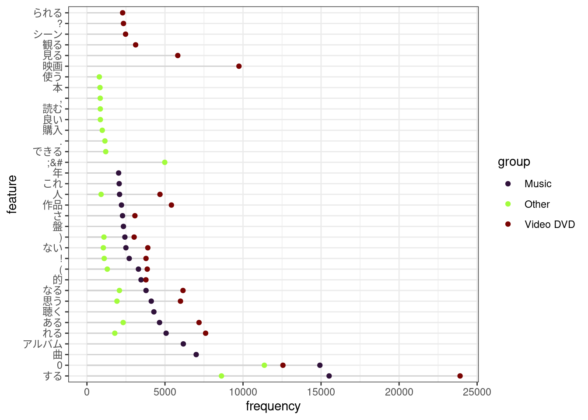

Chapter 3 Preprocessing
3.1 前処理
データセットから10%だけ抽出して使用することにします。ここで一部の前処理もやってしまいます。
レビューのテキストについては、あらかじめ形態素解析をすませてから、スペース区切りのテキストとしてデータセットのなかに差し戻しておきます。tidymodelsの枠組みのなかでやってもよいのですが、形態素解析は文字列を分割する処理としてはわりと重いので、個人的には、学習とセットではやらないほうがよいかなと思います。
corp <- dt |>
dtplyr::lazy_dt(immutable = TRUE) |>
dplyr::slice_sample(prop = .1) |>
dplyr::select(
review_id, product_category,
verified_purchase,
star_rating, helpful_votes, total_votes,
review_headline, review_body,
review_date
) |>
dplyr::mutate(
product_category = forcats::fct_lump(factor(product_category), n = 2),
verified_purchase = factor(verified_purchase),
star_rating = forcats::fct_lump(factor(star_rating), n = 2),
review_len = nchar(review_body),
review_month = factor(lubridate::month(review_date)),
review_wday = factor(lubridate::wday(review_date, label = TRUE))
) |>
dplyr::select(!review_date) |>
dplyr::filter(review_len > 50, review_len < 2000) |>
dplyr::as_tibble()ここではMeCab+IPA辞書で解析し、品詞が「助詞・助動詞・記号」である語と、品詞細分類1が「非自立」である語を取り除きます。
corp <- corp |>
dplyr::select(review_id, review_headline, review_body) |>
dplyr::mutate(chunk_id = dplyr::ntile(dplyr::row_number(), 10)) |>
dplyr::group_by(chunk_id) |>
dplyr::group_map(\(df, grp) {
df |>
dplyr::mutate(
review_body = stringi::stri_c(review_headline, review_body, sep = "\n\n") |>
stringi::stri_replace_all_regex("(<br />)", "\n\n") |>
audubon::strj_normalize() |>
stringi::stri_trim_both() |>
stringi::stri_replace_all_regex("[\\d]+", "0")
) |>
dplyr::select(review_id, review_body) |>
gibasa::tokenize(review_body, review_id) |>
dplyr::filter(!gibasa::is_blank(token)) |>
gibasa::prettify(col_select = c("POS1", "POS2", "Original")) |>
dplyr::mutate(token = dplyr::if_else(is.na(Original), token, Original)) |>
dplyr::add_count(doc_id, token) |>
gibasa::mute_tokens(POS1 %in% c("助詞", "助動詞", "記号")) |>
gibasa::mute_tokens(POS2 == "非自立") |>
gibasa::pack()
}) |>
purrr::list_rbind() |>
dplyr::left_join(
corp |>
dplyr::select(
review_id, product_category,
verified_purchase,
star_rating, helpful_votes, total_votes,
review_len, review_month, review_wday
),
by = c("doc_id" = "review_id")
) |>
dplyr::as_tibble()3.2 形態素解析の結果の確認
後でtextrecipes::step_tokenfilterを使って語彙を減らすので、この段階で大体の語彙数を確認します。rsample::initial_splitはとくに何も指定しないと75%を訓練データにするので、コーパス全体の75%くらいについて、語彙数を確認しておきます。
corp |>
quanteda::corpus() %>%
quanteda::corpus_sample(x = ., size = floor(quanteda::ndoc(.) * .75)) |>
quanteda::tokens(what = "fastestword") |>
quanteda::dfm() |>
quanteda::dfm_trim(min_termfreq = 100) |>
quanteda::nfeat()## [1] 1904corp |>
quanteda::corpus() %>%
quanteda::corpus_sample(x = ., size = floor(quanteda::ndoc(.) * .75)) |>
quanteda::tokens(what = "fastestword") |>
quanteda::dfm() |>
quanteda::dfm_trim(min_termfreq = 100) |>
quanteda.textstats::textstat_frequency(
n = 20L,
groups = product_category,
force = TRUE
) |>
ggpubr::ggdotchart(
x = "feature",
y = "frequency",
group = "group",
color = "group",
palette = viridisLite::turbo(3),
add = "segment",
rotate = TRUE
) +
ggplot2::theme_bw()

Figure 3.1: Frequent words in each category